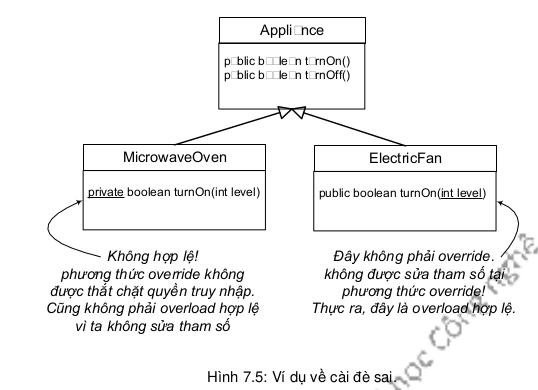

Khi ta cài đè một phương thức của lớp cha, ta đồng ý tuân thủ hợp đồng mà lớp cha đã cam kết. Chẳng hạn, hợp đồng nói rằng "tôi không lấy đối số và tôi trả về một giá trị boolean". Nói cách khác, các kiểu đối số và kiểu trả về của phiên bản mới của phương thức phải trông giống hệt với bản của lớp cha.
Các phương thức chính là hợp đồng.
Nhớ lại rằng, với mỗi lời gọi phương thức, trình biên dịch dùng kiểu tham chiếu để xác định xem ta có thể gọi phương thức đó từ tham chiếu đó hay không. Với một tham chiếu kiểu Appliance (thiết bị điện) chiếu tới một đối tượng ElectricFan (quạt điện), trình biên dịch chỉ quan tâm xem lớp Appliance có phương thức mà ta đang gọi từ tham chiếu Appliance hay không. Còn khi chương trình chạy, máy ảo Java không để ý đến kiểu tham chiếu (Appliance) và chỉ quan tâm đến đối tượng ElectricFan thực tế đang nằm trong bộ nhớ heap. Do đó, nếu trình biên dịch đã chấp thuận lời gọi phương thức, lời gọi đó chỉ có thể hoạt động được nếu như phiên bản cài đè cũng có các tham số và kiểu trả về giống như phiên bản của Appliance. Khi ai đó dùng một tham chiếu Appliance gọi turnOn() không có đối số, phiên bản turnOn() của Appliance sẽ được chạy, ngay cả khi ElectricFan có một bản turnOn() với một tham số int. Nói cách khác, đơn giản là phương thức turnOn(int level) tại ElectricFan không đè phiên bản turnOn() không tham số tại Appliance!
Việc cài đè phải tuân thủ các quy tắc sau:
Danh sách tham số phải trùng nhau, kiểu giá trị trả về phải tương thích. Hợp đồng của lớp cha quy định quy cách mà các phần mã khác sử dụng các phương thức của nó. Phương thức của lớp cha có thể được gọi với danh sách đối số như thế nào thì cũng có thể gọi phương thức của lớp con với danh sách đối số đó. Phương thức của lớp cha tuyên bố kiểu trả về là gì, thì phương thức của lớp con cũng phải khai báo chính kiểu trả về đó hoặc một kiểu lớp con của kiểu đó. Nhớ lại rằng một đối tượng thuộc lớp con phải được đảm bảo có thể làm được bất cứ thứ gì mà lớp cha đã tuyên bố, do đó, việc trả về đối tượng lớp con ở vị trí của đối tượng lớp cha là việc an toàn.
Phương thức đè không được giảm quyền truy nhập so với phiên bản của lớp cha. Nói cách khác, quyền truy nhập mà phiên bản của lớp con cho phép phải bằng hoặc rộng hơn phiên bản của lớp cha. Ta không thể cài đè một phương thức public bằng một phiên bản private. Nếu không, tình huống xảy ra là một lời gọi phương thức đã được trình biên dịch chấp nhận vì tưởng là phương thức public nhưng đến khi nó chạy lại bị máy ảo từ chối vì phiên bản được gọi lại là private. Như vậy, ta đã hiểu thêm về hai mức quyền truy nhập: private và public. Còn hai mức quyền truy nhập khác sẽ được nói đến trong Mục 7.11. Ngoài ra còn có một quy tắc khác về cài đè liên quan đến xử lý ngoại lệ, ta sẽ nói về quy tắc này tại Ch-¬ng 10.